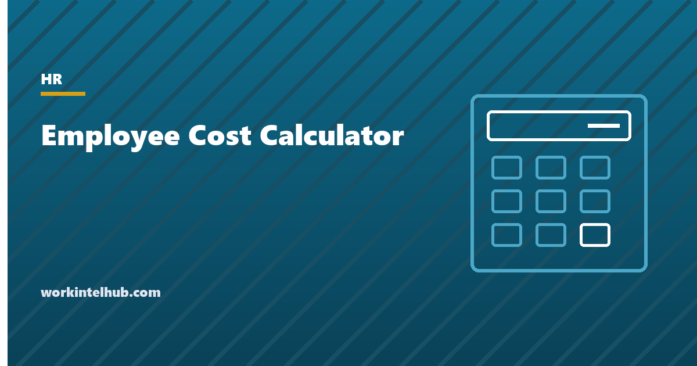

Employee Cost Calculator

An employee costs more than their pay. On top of wages an employer pays Social Security and Medicare taxes, federal and state unemployment insurance, workers' compensation premiums, its share of health insurance, a retirement match, and the equipment, space, software, recruiting and training that let the person work. The Bureau of Labor Statistics Employer Costs for Employee Compensation survey for June 2026 puts the average private-industry cost at $46.89 an hour, of which wages are $32.82 and benefits $14.07. Benefits therefore add about 43 per cent to wages and make up 30 per cent of the total. For a full-time worker the figure is $54.00 an hour.
The commonly quoted rule of thumb, that an employee costs 1.25 to 1.4 times salary, is where most white-collar roles land once everything is counted.
The calculator below builds the number from your own inputs with 2026 tax rates. The rest of the page walks through each component, gives the benchmarks, and explains why the cost per hour actually worked, rather than per hour paid, is the figure that should drive hiring, pricing and the contractor comparison.
Employee cost calculator
Employer payroll taxes use 2026 federal figures: Social Security 6.2% to the $184,500 wage base, Medicare 1.45% on all wages, FUTA 0.6% on the first $7,000 after the state credit. State unemployment rates and bases vary widely; enter yours. Nothing typed here leaves your browser.
The components, with 2026 figures
| Component | 2026 rate or benchmark | Notes |
|---|---|---|
| Social Security (employer share) | 6.2% of wages up to $184,500 | Wage base per the SSA; stops above it |
| Medicare (employer share) | 1.45% of all wages | No cap; the 0.9% additional Medicare tax is employee-only |
| Federal unemployment (FUTA) | 0.6% of the first $7,000, so $42 a year | 6.0% nominal less the 5.4% credit for paying state tax on time; credit-reduction states pay more |
| State unemployment (SUTA) | Typically 1% to 5% of a wage base from $7,000 to over $50,000 | Rate is employer-specific and experience-rated; new employers get a standard rate |
| Workers' compensation | $0.10 to over $10 per $100 of payroll by class code | Clerical roles near the bottom; construction and manufacturing at the top |
| Health insurance (employer share) | Roughly $650 to $750 a month for single coverage, $1,600 to $1,900 for family | Employers cover about 80% of single and 70% of family premiums on average |
| Retirement | 3% to 6% of pay for a typical match | Plus plan administration |
| Paid leave | Already in wages, but 7 to 8% of hours are paid and not worked | This is why cost per hour worked exceeds cost per hour paid |
| Other benefits | $1,000 to $3,000 a year | Life, disability, dental, vision, wellness, stipends |
| Equipment, software, space | $3,000 to $10,000 a year | Office space alone runs $5,000 to $15,000 a seat in major metros |
| Recruiting and training | Cost per hire around $5,475 (SHRM 2025), amortised over expected tenure | See HR metrics |
IRS Publication 15 has the federal rates and deposit rules. The BLS breakdown for private industry in June 2026 puts legally required benefits at $3.93 an hour, or 7.2 per cent of compensation. Insurance is around 7 per cent, paid leave around 7 per cent and retirement around 3 per cent, with supplemental pay making up the rest. Those shares are the sanity check for the calculator's output: if benefits come out under 20 per cent of the total, something is missing, usually health insurance.
Cost per hour worked, not per hour paid
A salaried employee is paid for 2,080 hours and works fewer. The work hours in a year page shows that after federal holidays, three weeks of leave and a few sick days, the figure is about 1,850 to 1,880. Dividing the total cost by the hours actually worked gives the number that should set a billing rate, a project budget or a hiring decision, and it is typically 10 to 12 per cent higher than the 2,080-hour figure. The calculator shows both.
For billing the gap is larger still, because not every worked hour is billable: admin, internal meetings and training consume a share, and the realistic billable year for a professional is 1,500 to 1,700 hours. A $70,000 salary that costs $95,000 loaded and yields 1,600 billable hours has a break-even rate near $60 an hour before any margin. The salary to hourly calculator does the conventional conversion; this page does the loaded one.
Employee versus contractor cost
A contractor's rate looks high next to an employee's hourly wage and often looks reasonable next to the employee's loaded cost. A contractor at $60 an hour who bills 1,600 hours costs $96,000 with no payroll tax, benefits, equipment or paid leave, which is roughly the loaded cost of a $70,000 employee. The contractor carries their own taxes, insurance and downtime, and the employer carries none of the obligations, but also has none of the control, continuity or intellectual-property defaults that employment brings.
The comparison is only valid if the classification is. A worker who is treated as an employee in practice, set hours, supervised work, the company's tools, indefinite engagement, is an employee whatever the contract says, and the back taxes, penalties and benefit claims that follow misclassification cost more than the savings. The 1099 versus W-2 guide covers the tests and the 2026 Department of Labor rule.
What the number is for
- Headcount budgets. A plan built on salaries alone is short by a quarter to a third.
- Pricing. Services priced on wages rather than loaded cost lose money on every hour.
- Overtime versus hiring. Overtime at 1.5× base is often cheaper than a new hire at 1.3× loaded, up to the point where turnover and errors from fatigue take over; the overtime calculator gives the first number.
- Turnover cost. Replacement is commonly estimated at a third to a half of salary; the loaded figure shows why, since the recruiting, training and vacancy costs are all in the overhead lines.
- Raise decisions. A 4 per cent raise on salary is a 4 per cent raise on the loaded cost too, since taxes, match and workers' compensation scale with pay; the pay raise calculator shows the employee's side.
Key takeaways
- An employee costs wages plus 25 to 40 per cent, sometimes more: payroll taxes, unemployment insurance, workers' compensation, benefits, equipment and training.
- BLS June 2026: private-industry compensation averages $46.89 an hour, wages $32.82 and benefits $14.07 (30 per cent of the total); full-time $54.00.
- 2026 employer taxes: Social Security 6.2 per cent to $184,500, Medicare 1.45 per cent uncapped, FUTA 0.6 per cent of the first $7,000, plus state unemployment.
- Divide by hours actually worked (about 1,850 to 1,880), not 2,080, and by billable hours for a billing rate.
- A contractor's rate compares to the loaded cost, not the wage, and only if the classification is correct.
- Use the loaded figure for headcount budgets, pricing, overtime-versus-hire and turnover cost.
Frequently asked questions
How much does an employee really cost?
Typically 1.25 to 1.4 times salary for office roles once employer payroll taxes, unemployment insurance, workers' compensation, health insurance, a retirement match, equipment and training are counted, and more where health coverage is generous or space is expensive. BLS data for June 2026 puts benefits at 30 per cent of total private-industry compensation.
What payroll taxes does an employer pay in 2026?
Social Security at 6.2 per cent of wages up to $184,500; Medicare at 1.45 per cent of all wages; federal unemployment at 0.6 per cent of the first $7,000 after the state credit, which is $42 a year; and state unemployment at an employer-specific rate, commonly 1 to 5 per cent, on a state wage base. Workers' compensation insurance is a separate, mandatory cost.
How do I calculate cost per hour for an employee?
Add gross pay, employer taxes, workers' compensation, benefits and overhead for the year, then divide by the hours actually worked, usually about 1,850 to 1,880 for a full-time employee after holidays and leave. Dividing by 2,080 understates the figure by 10 to 12 per cent. For a billing rate, divide by billable hours instead.
What percentage of salary are benefits?
In BLS data for June 2026, benefits average 43 per cent of wages in private industry, or 30 per cent of total compensation. Legally required benefits (Social Security, Medicare, unemployment, workers' compensation) are about 7 per cent of compensation, insurance about 7 per cent, paid leave about 7 per cent and retirement about 3 per cent.
Is a contractor cheaper than an employee?
Per hour the rate is usually higher; per year the cost is often similar once the employee's loaded cost is counted, because the contractor carries their own taxes, benefits and downtime. The comparison only holds if the worker is genuinely independent under the IRS and Department of Labor tests; misclassification costs more than the saving.
Does the employee cost calculator include the 2,080-hour convention?
Yes. It shows cost per hour at 2,080 hours for comparison with payroll conventions, and cost per hour actually worked, which is the figure to use for budgets, pricing and hiring decisions.